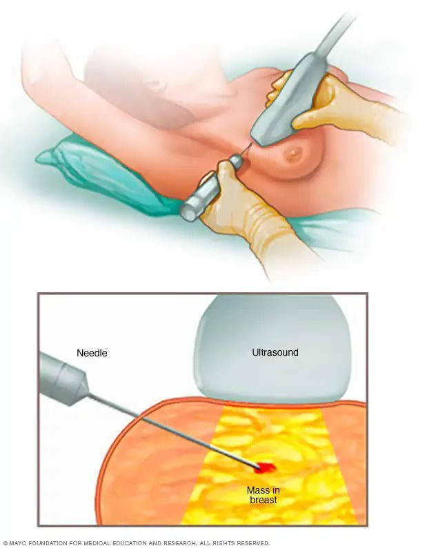

Biopsia de Seno30–60 min
- ¿Qué es una biopsia de seno?
- Una biopsia de seno utiliza una aguja para obtener una muestra de tejido mamario y analizar si hay cáncer. Es la única prueba que puede confirmar si algo es cancerosa.
- ¿Por qué te haces una biopsia de seno?
- Si un bulto, un cambio en la seno o una prueba de imagen (como una mamografía o un ultrasonido) muestra un hallazgo anormal, su médico puede recomendar una biopsia de seno para determinar si se trata de cáncer.
- ¿Duele?
- Como la zona estará entumecida, la mayoría de las pacientes lo describen como una sensación de presión más que de dolor. Puede haber algunos moretones y sensibilidad en los días posteriores
